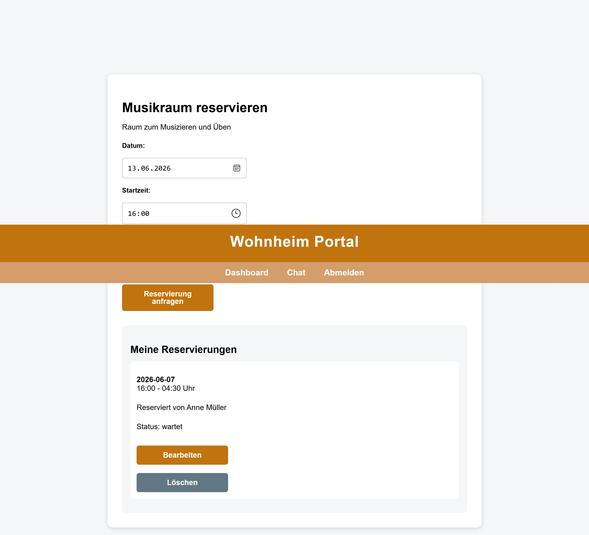

1. Kurze Beschreibung der implementierten Formulare und Interaktionen
In Aufgabe 6 wurde das Wohnheim Portal um interaktive Formulare erweitert. Benutzer können neue Reservierungen für den Musikraum und den Partyraum anfragen.
- Reservierungsformular: Benutzer können Datum, Startzeit und Endzeit eingeben.
- Bearbeitungsformular: Bestehende Reservierungen können geändert werden.
- Löschformular: Reservierungen können über ein POST-Formular gelöscht werden.
Neue Reservierungen erhalten zunächst den Status wartet, da sie noch von einem Admin bestätigt werden müssen.
2. Verlinkung zu allen Routen mit Formularen
Zusätzlich gibt es Bearbeitungsrouten für einzelne Reservierungen, die über die jeweiligen Bearbeiten-Buttons erreichbar sind.
3. Screenshot eines Hauptformulars
Der folgende Screenshot zeigt ein Hauptformular der Anwendung.

4. Erläuterungen zu den implementierten Funktionen
Reservierung erstellen
Für Musikraum und Partyraum wurde ein Formular mit method="post" erstellt. Die Formulardaten werden im Controller aus req.body gelesen und über das Model-Modul in der Datenbank gespeichert.
POST /reservierungen/:roomId/createReservierung bearbeiten
Für bestehende Reservierungen gibt es eine GET-Route zum Anzeigen des Formulars und eine POST-Route zum Speichern der Änderungen. Nach dem Bearbeiten wird der Status wieder auf wartet gesetzt.
GET /reservierungen/:id/edit
POST /reservierungen/:id/editReservierung löschen
Das Löschen einer Reservierung erfolgt über ein kleines POST-Formular. Dadurch werden Datenänderungen nicht über GET-Links ausgelöst.
POST /reservierungen/:id/delete5. Beschreibung der verwendeten HTTP-Methoden
Für normale Seitenaufrufe und Navigation wird die Methode GET verwendet. Beispiele dafür sind das Öffnen des Dashboards, der Raumseiten.
Für alle Aktionen, die Daten verändern, wird POST verwendet. Dazu gehören das Erstellen, Bearbeiten und Löschen von Reservierungen.
- GET: Seiten anzeigen und Formulare laden.
- POST: Neue Daten speichern, bestehende Daten ändern oder Daten löschen.